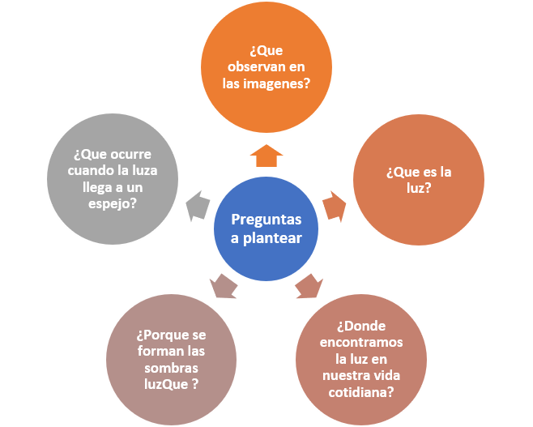
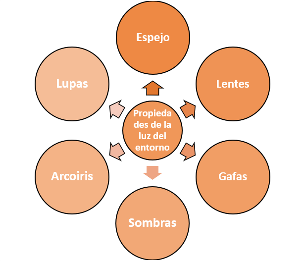

Texto
1.Tema de la unidad didáctica
Fortalecimiento de la comprensión de las propiedades de la luz mediante actividades prácticas y ejemplos de la vida cotidiana en la unidad de Óptica geométrica.
Unidad III: Óptica Geométrica
Contenido: Propiedades de la luz
2.JUSTIFICACIÓN
El estudio de la Óptica geométrica es importante para la formación científica de los estudiantes, ya que permite comprender diferentes fenómenos relacionados con la luz que están presentes en la vida cotidiana. A través del conocimiento de sus propiedades, los estudiantes pueden interpretar situaciones como la formación de sombras, la reflexión de la luz en los espejos, la refracción que se observa cuando un objeto se introduce en agua y otros fenómenos relacionados con el comportamiento de la luz.
La necesidad de desarrollar esta unidad surge a partir de la dificultad identificada en los estudiantes para comprender las propiedades de la luz, debido a que requieren mayor cantidad de ejemplos prácticos que les permitan relacionar los conceptos científicos con situaciones concretas y observables.
Desde el punto de vista curricular, esta unidad contribuye al desarrollo de conocimientos científicos y habilidades relacionadas con la observación, la experimentación, el análisis y la explicación de fenómenos naturales. Además, permite fortalecer el aprendizaje de la Física mediante la relación entre los conocimientos teóricos y la práctica.
Los estudiantes poseen algunos conocimientos previos relacionados con la luz, como reconocer que esta permite observar los objetos, identificar algunas fuentes de luz y reconocer fenómenos como las sombras. Sin embargo, presentan dificultades para explicar de manera científica las propiedades de la luz y relacionarlas con los fenómenos que observan.
Por esta razón, se propone el desarrollo de actividades prácticas como la experimentación y ejemplos de la vida cotidiana que permitan a los estudiantes observar directamente los fenómenos luminosos, formular explicaciones, experimentar con diferentes materiales y construir sus propios aprendizajes.
3.OBJETIVOS DE APRENDIZAJE
Objetivo General
Mejorar la comprensión de las propiedades de la luz mediante actividades prácticas y situaciones de la vida cotidiana, promoviendo la experimentación y la explicación científica de los fenómenos relacionados con la Óptica geométrica.
Objetivos Específicos
Comprender las propiedades de la luz mediante la realización de actividades prácticas que permitan relacionarlas con fenómenos presentes en la vida cotidiana.
Explicar las propiedades de la luz utilizando conceptos científicos y ejemplos relacionados con situaciones de la vida cotidiana.
Comprobar mediante actividades prácticas algunas propiedades de la luz, utilizando materiales sencillos y de fácil acceso.
Desarrollar habilidades de observación, análisis, comunicación y trabajo colaborativo mediante la realización de actividades experimentales.
4. CONTENIDOS
|
Contenidos conceptuales |
Contenidos procedimentales |
Contenidos actitudinales |
|
Concepto de luz. |
Observación de diferentes fenómenos relacionados con la luz. |
Participación activa en las actividades propuestas. |
|
Óptica geométrica. |
Identificación de las propiedades de la luz. |
Interés por comprender los fenómenos relacionados con la luz. |
|
Propiedades de la luz. |
Realización de experimentos sencillos. |
Respeto por las ideas y opiniones de los compañeros. |
|
Propagación de la luz. |
Utilización adecuada de materiales para comprobar fenómenos luminosos. |
Disposición para trabajar de manera colaborativa. |
|
Reflexión de la luz. |
Relación de los conocimientos científicos con situaciones de la vida cotidiana. |
Trabajar de manera colaborativa y respetuosa con los compañeros. |
|
Refracción de la luz. |
Realizar experiencias sencillas sobre reflexión y refracción de la luz. |
Valorar el trabajo en equipo como una forma de construir conocimientos. |
|
Fenómenos luminosos presentes en la vida cotidiana. |
Explicar mediantes ejemplos cotidianos cómo se comporta la luz al interactuar con diferentes materiales. |
Ser cuidadoso y ordenado en la realización de las actividades prácticas. |
5. COMPETENCIAS O CAPACIDADES A DESARROLLAR
Durante el desarrollo de la unidad se pretende fortalecer las siguientes competencias y capacidades:
Comunicación científica
- Expresa y comunica de manera clara sus ideas, observaciones y conclusiones relacionadas con las propiedades de la luz.
Pensamiento crítico
- Analiza diferentes fenómenos luminosos y busca explicaciones basadas en conocimientos científicos.
Indagación científica
- Observa, formula preguntas, realiza experimentos, registra resultados y establece conclusiones a partir de las evidencias obtenidas.
Resolución de problemas
- Aplica los conocimientos sobre las propiedades de la luz para explicar situaciones y fenómenos de la vida cotidiana.
Trabajo colaborativo
- Participa responsablemente en actividades grupales, respetando las opiniones de los demás y contribuyendo al logro de los objetivos comunes.
6. ESTRATEGIAS DIDÁCTICAS
La estrategia didáctica principal será el aprendizaje práctico y experimental mediante ejemplos de la vida cotidiana.
Esta estrategia se selecciona debido a la dificultad identificada en los estudiantes para comprender las propiedades de la luz. Se busca que los estudiantes no se limiten a memorizar conceptos, sino que puedan observar, experimentar, analizar y explicar los fenómenos luminosos.
- Para ello, se utilizarán las siguientes estrategias:
- Exposición dialogada para introducir los conceptos.
- Preguntas generadoras para activar los conocimientos previos.
- Aprendizaje cooperativo mediante el trabajo en equipos.
- Actividades prácticas y experimentales.
- Utilización de ejemplos de la vida cotidiana.
- Observación y análisis de fenómenos luminosos.
- Resolución de situaciones problemáticas.
- El uso de la aplicación Kahoot.
La aplicación de estas estrategias permitirá establecer una relación entre teoría y práctica, facilitando que los estudiantes comprendan las propiedades de la luz a partir de experiencias concretas.
7. ACTIVIDADES
ACRIVIDADES DE INICIO
Actividad: Exploramos nuestros conocimientos sobre la luz
El docente presenta imágenes o situaciones cotidianas relacionadas con la luz, como un espejo, una sombra, un arcoíris, una lupa o un objeto dentro de un recipiente con agua.
Posteriormente, plantea preguntas como:

Los estudiantes expresan sus conocimientos e ideas previas.
Actividad: Presentación del propósito de la unidad
El docente explica a los estudiantes qué aprenderán durante la unidad y presenta los objetivos, destacando la importancia de comprender las propiedades de la luz mediante actividades prácticas.
ACTIVIDADES DE DESARROLLO
Actividad: Conocemos las propiedades de la luz
El docente realiza una explicación dialogada sobre las principales propiedades de la luz, utilizando imágenes, ejemplos sencillos y situaciones de la vida cotidiana.
Los estudiantes elaboran apuntes y participan respondiendo preguntas.
Actividad: Experimentamos con la reflexión
Los estudiantes, organizados en equipos, utilizan una fuente de luz y un espejo para observar qué sucede cuando la luz llega a una superficie reflectante.
Posteriormente, registran sus observaciones y explican con sus propias palabras el fenómeno observado.
Actividad: Experimentamos con la refracción
Los estudiantes colocan un lápiz u otro objeto dentro de un recipiente transparente con agua y observan cómo parece cambiar su posición o forma.
Después, comentan lo observado y lo relacionan con el fenómeno de la refracción.
Actividad: Observamos la formación de sombras
Los estudiantes utilizan una fuente de luz y diferentes objetos para observar cómo se producen las sombras.
Comparan los resultados obtenidos y determinan qué ocurre cuando un objeto impide el paso de la luz.
Actividad: Relacionamos la luz con nuestra vida cotidiana
Los estudiantes identifican ejemplos de las propiedades de la luz presentes en su entorno, como:

Cada equipo selecciona algunos ejemplos y explica qué propiedad de la luz está relacionada con ellos.
Actividad: Socializamos nuestros aprendizajes
Cada equipo presenta los resultados de una de las actividades prácticas realizadas. Los demás estudiantes participan formulando preguntas y aportando ejemplos.
ACTIVIDADES DE CIERRE
Actividad: Construimos lo aprendido
Los estudiantes elaboran un mapa conceptual o esquema donde relacionan:
Luz, propiedades, fenómenos y ejemplos de la vida cotidiana.
Actividad: Reflexionamos sobre nuestro aprendizaje
Los estudiantes responden preguntas como:
¿Qué aprendí sobre las propiedades de la luz?
¿Qué experimento me ayudó más a comprender el tema?
¿Qué propiedad de la luz puedo identificar en mi vida cotidiana?
¿Qué dificultad tuve durante las actividades?
¿Cómo logré superarla?
Finalmente, se realiza una evaluación para comprobar el nivel de logro de los objetivos de aprendizaje.
8. RECURSOS DIDÁCTICOS
Para desarrollar las actividades se utilizarán recursos accesibles y adecuados para facilitar el aprendizaje práctico.
Materiales manipulativos
· Linternas.
· Espejos.
· Recipientes transparentes.
· Agua.
· Lápices.
· Objetos transparentes, translúcidos y opacos.
· Hojas de trabajo.
Materiales impresos
· Guías de aprendizaje.
· Fichas de trabajo.
· Lecturas relacionadas con la Óptica geométrica.
· Imágenes de fenómenos luminosos.
Recursos audiovisuales
· Videos educativos.
· Imágenes.
· Presentaciones digitales.
Recursos tecnológicos
· Computadora.
· Teléfonos celulares, cuando sea posible.
· Proyector.
· Recursos digitales educativos.
9. EVALUACIÓN
La evaluación será un proceso continuo, integral y relacionado con los objetivos de aprendizaje, considerando los conocimientos, habilidades y actitudes desarrolladas durante la unidad.
|
Tipo de Evaluación |
Momento |
Técnicas e Instrumentos |
Propósito |
|
Diagnostica |
Al inicio de la unidad. |
Preguntas iniciales o lluvias de ideas. |
Identificar las ideas previas, conocimientos y dificultades del estudiante. |
|
Formativa |
Durante el desarrollo de la unidad. |
Observación directa, preguntas orales, actividades prácticas como trabajos grupales. |
Dar seguimiento al aprendizaje de los estudiantes y brindar retroalimentación oportuna durante el proceso. |
|
Sumativa |
Al finalizar de la unidad. |
Elaboración de mapa conceptual, actividad experimental y resoluciones de situaciones de la vida cotidiana. |
Comprobar el nivel de logro de los objetivos de aprendizaje establecidos. |
Criterios de evaluación
Se tendrá en cuenta si el estudiante:
- Identifica las principales propiedades de la luz.
- Explica las propiedades de la luz con claridad.
- Relaciona los conceptos con situaciones cotidianas.
- Participa adecuadamente en las actividades experimentales.
- Interpreta los resultados de los experimentos.
- Comunica sus conclusiones.
- Trabaja responsablemente en equipo.
- Utiliza correctamente los materiales.
Instrumentos de Evaluación
- Lista de cotejo
- Cuestionario
- Rubrica
- Autoevaluación
10. TEMPORALIZACION
La unidad didáctica se desarrollará en 6 sesiones de 90 minutos cada una, para un total de 9 horas. Las actividades se organizarán de manera progresiva, iniciando con la recuperación de conocimientos previos y el planteamiento de la situación problemática, para continuar con actividades prácticas y experimentales relacionadas con las propiedades de la luz. Finalmente, se realizará el análisis de los resultados, la socialización de los aprendizajes y la evaluación de los conocimientos adquiridos.
|
Sesión |
Actividades principales |
Tiempo |
|
1 |
Presentación de la situación problemática relacionada con las propiedades de la luz, recuperación de conocimientos previos mediantes preguntas generadoras y formulación de hipótesis sobre las propiedades de la luz. |
90 minutos |
|
2 |
Análisis de la situación problemática, organización de los grupos de trabajo y orientación para el desarrollo de las actividades experimentales. Introducción a las propiedades de la luz mediante ejemplos de la vida cotidiana. |
90 minutos |
|
3 |
Realización de actividades experimentales sobre la propagación rectilínea y reflexión de la luz, utilizando materiales sencillos. Registros de las observaciones. |
90 minutos |
|
4 |
Realización de actividades experimentales sobre la refracción y dispersión de la luz. Análisis y registro de los resultados obtenidos. |
90 minutos |
|
5 |
Comprobación de las hipótesis mediante los resultados experimentales, resolución de situaciones prácticas y relación de las propiedades de la luz con fenómenos de la vida cotidiana. |
90 minutos |
|
6 |
Socialización de los resultados obtenidos por los grupos, explicación de los fenómenos observados, elaboración de conclusiones y evaluación de los aprendizajes alcanzados. |
90 minutos |
11. ATENCIÓN A LA DIVERSIDAD
La atención a la diversidad será un elemento fundamental durante el desarrollo de la unidad didáctica, considerando que los estudiantes presentan diferentes ritmos, estilos y necesidades de aprendizaje. Por ello, se implementarán estrategias que permitan la participación activa de todos los estudiantes y faciliten la comprensión de las propiedades de la luz mediante actividades prácticas, experimentales y ejemplos relacionados con la vida cotidiana.
Actividades multinivel
Se propondrán actividades con diferentes niveles de complejidad, de acuerdo con las capacidades y ritmos de aprendizaje de los estudiantes. Algunos estudiantes podrán realizar actividades de identificación y descripción de las propiedades de la luz, mientras que otros podrán avanzar hacia actividades de análisis, explicación y aplicación de estos conocimientos en situaciones de la vida cotidiana.
De esta manera, todos los estudiantes podrán trabajar el mismo contenido, pero con diferentes niveles de apoyo y dificultad según sus necesidades.
Adaptaciones curriculares
Cuando sea necesario, se realizarán ajustes en las actividades, instrucciones, materiales y formas de evaluación para favorecer el aprendizaje de los estudiantes que presenten necesidades educativas específicas.
Estas adaptaciones podrán incluir:
· Simplificación de las instrucciones sin modificar el propósito principal de aprendizaje.
· Mayor tiempo para realizar determinadas actividades.
· Uso de ejemplos concretos y situaciones de la vida cotidiana.
· Adaptación de las actividades prácticas de acuerdo con las posibilidades de cada estudiante.
· Utilización de diferentes formas para demostrar lo aprendido, como explicaciones orales, dibujos, esquemas, demostraciones prácticas o respuestas escritas.
· Ajustes en los instrumentos de evaluación cuando las necesidades del estudiante lo requieran.
Uso de apoyos visuales o manipulativos
Se utilizarán diferentes recursos visuales y materiales concretos para facilitar la comprensión de los contenidos, especialmente de los fenómenos relacionados con las propiedades de la luz.
Entre estos recursos se utilizarán:
· Imágenes y esquemas.
· Videos educativos.
· Demostraciones prácticas.
· Linternas.
· Espejos.
· Recipientes transparentes con agua.
· Objetos transparentes, translúcidos y opacos.
· Materiales sencillos para realizar experimentos.
El uso de estos recursos permitirá que los estudiantes puedan observar y manipular los fenómenos estudiados, facilitando la relación entre los conceptos científicos y las experiencias de la vida cotidiana.
Agrupamientos flexibles
Los estudiantes podrán organizarse de diferentes maneras de acuerdo con las características de cada actividad. Se trabajará de forma:
· Individual.
· En parejas.
· En pequeños grupos.
· En grupos heterogéneos.
Los agrupamientos heterogéneos permitirán que los estudiantes colaboren entre sí, compartan conocimientos y se apoyen durante las actividades prácticas y experimentales. Además, se asignarán diferentes responsabilidades dentro de los equipos para favorecer la participación de todos.
Aplicación de los principios del Diseño Universal para el Aprendizaje (DUA)
Se aplicarán los principios del Diseño Universal para el Aprendizaje con el propósito de ofrecer diferentes formas de presentar la información, participar en las actividades y demostrar los aprendizajes alcanzados.
Para ello se considerarán:
Múltiples formas de representación:
Los contenidos se presentarán mediante explicaciones orales, imágenes, esquemas, videos, ejemplos cotidianos y demostraciones experimentales, permitiendo que los estudiantes accedan a la información de diferentes maneras.
Múltiples formas de acción y expresión:
Los estudiantes podrán demostrar lo aprendido mediante respuestas orales y escritas, dibujos, mapas conceptuales, experimentos, exposiciones y explicaciones de fenómenos relacionados con las propiedades de la luz.
Múltiples formas de implicación:
Se promoverá la participación, el trabajo colaborativo, la experimentación y la relación de los contenidos con situaciones de la vida cotidiana, buscando despertar el interés y la motivación de los estudiantes.
De esta manera, la atención a la diversidad permitirá que todos los estudiantes tengan oportunidades de participar, aprender y demostrar sus conocimientos, respetando sus diferentes características, ritmos y necesidades de aprendizaje.